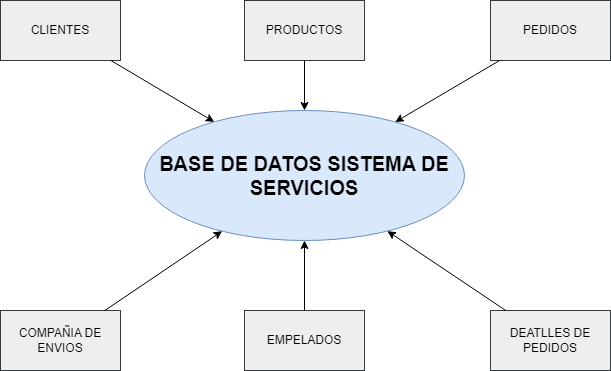
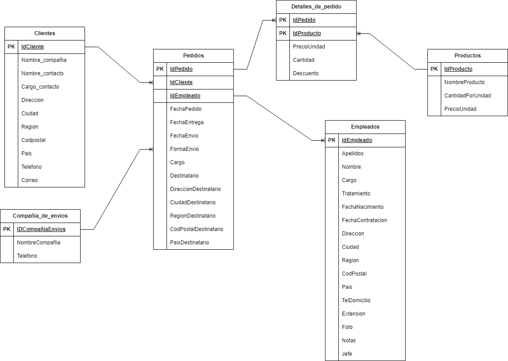
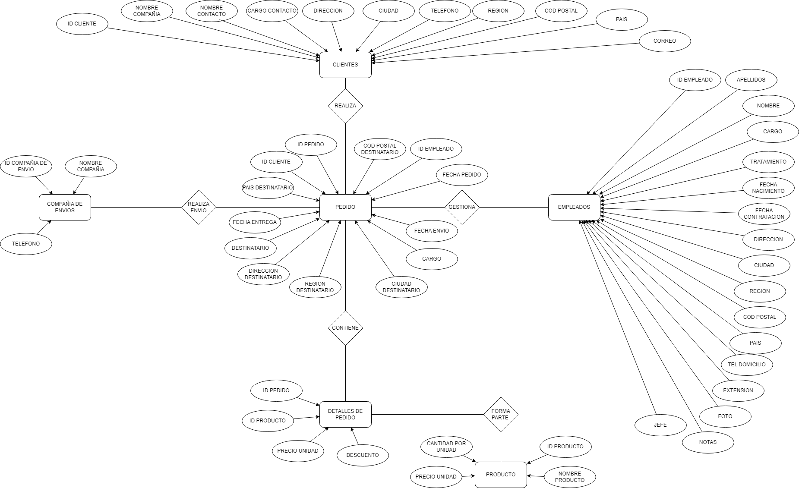

LABORATORIO NUMERO UNO
Este sistema de base de datos tiene como objetivo gestionar la información clave de una empresa o servicio que se dedica a vender productos y realizar envíos a los clientes. La base de datos está diseñada para almacenar detalles importantes sobre los clientes, productos, pedidos, empleados, compañías de envíos y los detalles específicos de cada pedido. Cada tabla está interconectada para facilitar el manejo de datos y asegurar la integridad de la información.
Realización
Para la creación de la base de datos, se estructuran varias tablas interrelacionadas a través de claves primarias y foráneas. Estas tablas se construyen de la siguiente manera:
- Tabla de Clientes: Esta tabla contiene la información personal de los clientes, como nombre, dirección, correo electrónico, y otros detalles necesarios para identificar al cliente y procesar sus pedidos.
- Tabla de Productos: Almacena la información de los productos disponibles para la venta, incluyendo el nombre, descripción, precio y cantidad en inventario.
- Tabla de Pedidos: Registra los pedidos realizados por los clientes, vinculando los productos con los clientes que los han solicitado, la fecha del pedido y el estado del mismo.
- Tabla de Compañías de Envíos: Contiene la información de las diferentes empresas que realizan los envíos, como nombre, métodos de envío y tarifas.
- Tabla de Empleados: Almacena la información de los empleados que gestionan los pedidos, como nombre, cargo, fecha de contratación y otros datos relevantes.
- Tabla de Detalles de Pedidos: Esta tabla conecta los productos con los pedidos específicos, detallando la cantidad de cada producto que se ha pedido, su precio unitario y el total del pedido.
Consultas Realizadas
Durante el diseño de la base de datos, se realizaron varias consultas para asegurar que la estructura fuera la adecuada y que las relaciones entre las tablas estuvieran bien definidas. Se consultaron principios de diseño de bases de datos, normalización (hasta la tercera forma normal, en la mayoría de los casos) y buenas prácticas para garantizar eficiencia en las consultas SQL.
Presentacion Final
Conclusión Final
El diseño de la base de datos para el sistema de servicios propuesto permite una gestión eficiente de los procesos involucrados en la venta y envío de productos. La interrelación de las tablas garantiza la integridad y coherencia de los datos, mientras que el uso de claves primarias y foráneas facilita la realización de consultas y la actualización de información. Con este sistema, la empresa puede realizar un seguimiento detallado de cada pedido, desde la solicitud hasta la entrega, proporcionando un servicio más ágil y organizado.
Regresar...